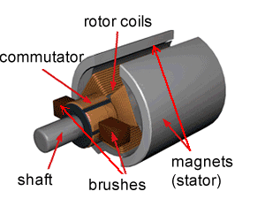

ECE3051 teaches the foundations for Power Engineering. Students will be taught about high power electrical equipment that are commonplace in Power Engineering industry.
This unit can potentially guide you to a wide variety of engineering sub-disciplines such as:
High Voltage Power Electronic Applications Smart GridsAmong its vast range of applications, some notable ones include:
Electric cars use the game-changing electric motors - the cleaner, environment-friendly alternative to the existing internal combustion engines.
Want to find out how such motors work?
Click here to find out moreWant to learn DCAC and ACDC power conversion techniques?
Want to apply these techniques to renewable energy systems + more?
Enrol today!
* Animation courtesy Dynamic Science